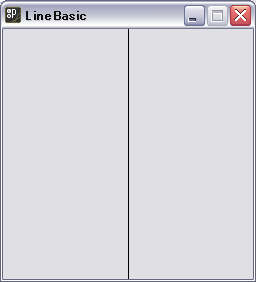

線を描く・動かす…Processing入門
Processingには、動きのないプログラムを作るStaticモードと、動きのあるプログラムを作るActiveモードがあります。静止した垂直線を描く動きのないプログラムと、垂直線が横に動くプログラムを例に、Processingのプログラム（スケッチ）の書き方を説明します。

【線を描く】Processingのエディタに、描画ウィンドウの大きさを指定する命令と、その中央に垂直線を描く命令の2つを書くと、左図のような実行結果となります。これがbasicモードです。
【線を動かす】
この垂直線を、右へ少しずつ(たとえば5ピクセルずつ）動かし、画面から消えたら、再び左から現れるようなプログラムは、Activeモードで記述します。
動きのないプログラム(Basicモード)
記述した命令(processingの文)が一度実行されます。size(250,250); //250×250ピクセルのウィンドウを表示する line(125, 0, 125, 250); //ウィンドウの中央に縦の線を引くsize()やline()はprocessingが提供する命令の名前で、ひとまとまりの仕事をする処理に対して名前を付けたものです。これを関数と呼びます。関数は
関数の名前（値, 値, ....);
【例】 size (250, 250);
のように書いて、その関数の仕事を実行させます。名前のうしろの丸かっこの中の値は、その関数が仕事をするのに必要なデータで、引数と呼びます。関数size()の場合は、ウィンドウの幅と高さをピクセル数で指定するように決められています。引数に指定する値と数は関数によって異なり、使う際にはリファレンスを調べる必要があります(Processingメニュー[Help]の[reference])。 引数が必要ない場合も丸かっこは必ず書きます。つまり、名前の後ろに丸かっこがあれば、それが関数であることがわかります。関数の後のセミコロン(;)は、processingの命令文の区切りを表します。
line()は２点の間に線を描く仕事をする関数で、点の座標を引数に指定します。
line（始点のx座標, 始点のy座標, 終点のx座標,終点のy座標);
ウィンドウ上の座標は、左上隅が原点(0, 0)で、x座標は右方向へ大きくなり、y座標は下方向へ大きくなります。line(125, 0, 125, 250);は点(125, 0)から点(125,250)へ線を引くという意味です。processingは、基本図形を描いたり、線の太さや色を指定するための、 さまざまな関数を用意しています。
動きのあるプログラム(Activeモード)
動きのあるプログラム、つまりアニメーションをするプログラムでは、 アニメーションの前に1度だけ実行する処理(初期化処理)と、繰返し実行される処理とを分けて書きます。初期化処理はsetup()関数内に、繰返す処理はdraw()関数内に書きます。
void setup(){
ここには、描画ウィンドウの大きさの指定など、1度だけ実行する命令を書く
}
void draw(){
ここには、グラフィックの描画や位置の計算など、繰返し実行する命令を書く
}
setup()関数に記述された命令が一度実行された後、draw()に記述された命令が1秒間に60回(60フレームレートで)繰返し実行されます。
フレームレートは、関数frameRate(整数)で変更できます。
クリックで開始⇔停止
int x; // 垂直線の位置(x座標)を保存する変数の準備
void setup(){
size(250,250);
frameRate(10); // 1秒に10回draw()を実行する(つまり描画する)
}
void draw(){
background(255); // 画面の背景を白でクリア
x = (x + 5)%250; /* xの値を5ずつ増やす。%250は250で割った余りを計算。
計算結果は250を越えたら0に戻る。*/
line(x, 0, x, 250); // x座標に垂直線を描く
}
プログラム内の //の後ろや、 /* と */で囲まれた部分はコメント(プログラムの注釈)で、命令を解釈するときには無視されます。
線を描く関数line()の引数に125のように定数を指定しては、線を動かすことはできません。線の位置を変数 にしておき、xの値を少しずつ変化させることで、線を動かします。 変数の準備(これを変数の宣言と言う)は、次のように書きます。
データ型 変数の名前；
【例】 int x;
データ型はデータの種類を表す名前で、「int x;」 のintは整数を表すデータ型、xは変数の名前です。変数の宣言は関数の外、使う前に記述します。整数int型の変数は、宣言した直後の値は0です(デフォルト値)。このxの値をdraw()の中で、5ずつ増やします。+記号は足し算をする算術演算子です。
x = x + 5;
draw()が実行される度に、線が新しい位置に描かれますが、同じ紙に複数の線を書くように、画面上に多数の線が残ります。1本の線が動いていくように見えるためには、順次新しい紙の上に、線を引く必要があります(つまり、パラパラアニメです)。それをしているのが、background(255); で、これは背景を白に塗りつぶす命令です(255はグレースケールの最大値で白)。
線の位置の計算を x = x + 5;とすることで、線のx位置が右へ移動して見えます。しかし、このままではxがウィンドウの幅より大きくなったときに、線は見えなくなります。xの値が250より大きくならないようにしているのが、%250です。%は余りを計算する算術演算子のひとつです。250で割った余りは必ず250より小さい値になります。
x = (x + 5)%250;
コンソールへの状態表示
ウィンドウ下部のコンソールには、プログラム実行中に起こったエラーやシステムからのメッセージなどが表示され、プログラムを作成中、プログラムの誤り(バグ)を発見し、修正する過程で、重要な情報源になります。Processingが表示するメッセージ以外に、プログラム自身が内部の状態を、コンソールに表示するようにしておくと、プログラムの処理の様子が把握でき、 問題の場所を発見するのに役立ちます。
コンソールに情報を表示するにはprintln()関数を使います。
println( 文字列 );
【例】 println( "start drawing" );
println()の引数には文字列を指定します。ダブルクォーテーションで囲んだ文字列の定数(リテラル)と変数名を＋演算子でつなぐと、変数の値を埋め込んだ文字列が作られ、表示されます。次の例では、"value of x:10"と表示されます。
int x = 10;
println( "value of x:" + x);
コンソールに情報を表示する関数には、このほかにprint()があります。println()が引数の文字列を表示後、改行をするのに対し、print()はしないというだけの違いです。